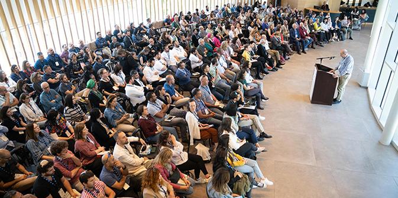
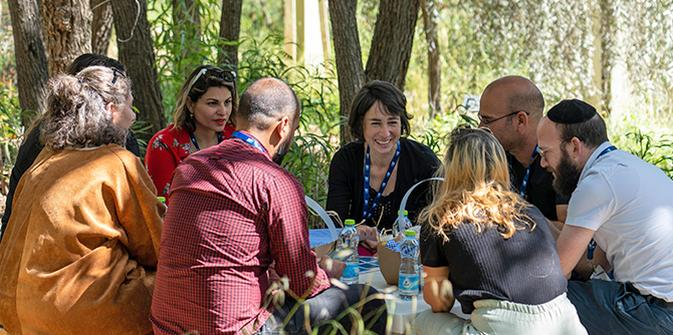
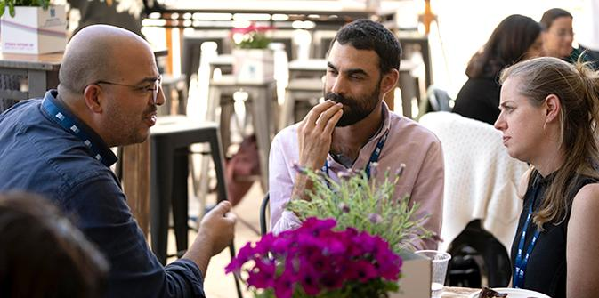
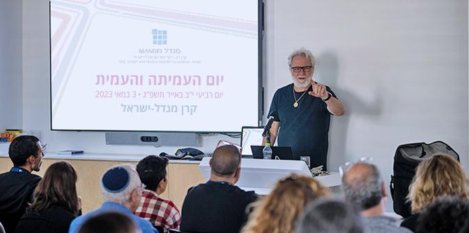

Moshe Vigdor addresses the fellows at the start of the day (Photo: Simanim)
The Mandel Fellows Day is a unique event that brings together all the fellows of the programs of the Mandel Foundation–Israel. This day creates a space for fellows of the Mandel School for Educational Leadership, the Mandel Leadership Institute, the Mandel Center for Leadership in the Negev and the Mandel Center for Leadership in the North to get to know each other better and learn more about the Foundation, its goals and activities, and its contribution to Israeli education, society and culture.
“Mandel is a place for connections, for meeting, for listening, for mutual respect, for equality, for faith in the human spirit, for learning, for thinking and for building bridges,” said
Moshe Vigdor, director general of the Mandel Foundation–Israel, in his words of welcome to the fellows.

Small group meetings at the Jerusalem Botanical Gardens (Photo: Simanim)
At the start of the day, the fellows gathered at the Jerusalem Botanical Gardens, adjacent to the Mandel Foundation building, for an activity in small mixed groups, during which they introduced themselves to each other. This was followed by a study session facilitated by faculty and fellows, which explored a variety of current issues: human intelligence vs. artificial intelligence, issues of identity and belonging, women’s leadership, and secular, religious and traditional ways of life. In one session, visiting faculty member Malka Puterkovsky explored different readings of the Israeli Declaration of Independence with Dov Elbaum, editor of
Israeli Talmud: Tractate Independence, an anthology of 160 essays in honor of the 75th anniversary of Israel’s founding.

Fellows exchanging ideas (Photo: Simanim)
Next, the fellows had a choice of experiential performances:
- Maqam – A multicultural musical encounter by the Israeli Andalusian Orchestra–Ashdod, which weaves together strands of East and West, holy and secular, new and old, and classical and folk.
- Embracing Post-Trauma – A conversation with director Ari Pullman, who discussed his films, which explore critical crossroads faced by Israeli society throughout its history.
- The Void – An encounter with the Kometz Theater, which was created in Beer Sheva in response to the lack of cultural experiences that were available during the COVID-19 pandemic and which presents texts to audiences in a minimalist fashion.

Ari Pullman discusses his films (Photo: Simanim)
At the end of the day, the fellows gathered into their respective program cohorts to share and process their experiences and insights. One fellow commented: “The meetings between fellows and faculty members were very interesting and contributed significantly to networking, both within and outside the Mandel community.”
Another fellow reported: “I am a fellow in the Mandel Program for Leadership Development in the Haredi Community, where we focus on social solidarity and public responsibility. But today’s event showed me the importance of truly coming face to face with the real world. It is not enough to talk about mutual responsibility if we don’t really know each other. Familiarity is what brings down barriers and dissolves fears. This needs to happen everywhere throughout Israel…”
{kind=link}
{kind=link}
{kind=link}
{kind=link}